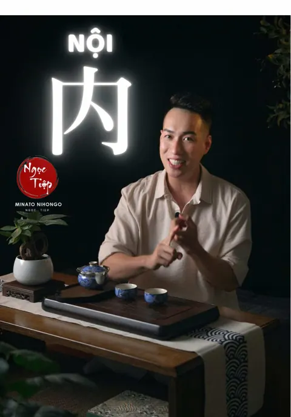

Deeplab Media · Production house
Video, TikTok và 3D cho doanh nghiệp
TVC 3D Dior · Deeplab sản xuấtCác kênh TikTok xây từ số 0
Ba kênh do Deeplab Media vận hành trọn gói (kịch bản, quay, dựng, thumbnail, lịch đăng) tăng thêm hơn 160.000 follower. Cùng nội dung, 14 reel trên Facebook đạt hơn 2 triệu lượt xem, cao nhất 399K. Ngoài TikTok, Deeplab sản xuất brand film 日鋼サッシュ製作所, DG Nozomi, Enmusubi Sài Gòn, Yaly Fashion Show và TVC 3D cho Dior, NIVEA, Apple Vision Pro.
 Động lực · phát triển bản thân
Động lực · phát triển bản thânNgọc Tiệp Minato: 100 → 66,5K follower
Kênh TikTok Ngọc Tiệp Minato tăng từ 100 lên 66,5K follower khi Deeplab Media vận hành trọn gói: kịch bản, quay, dựng, thumbnail và lịch đăng. Video cao nhất đạt 1,6 triệu lượt xem.
Xem case study →
Tiếng Nhật · giáo dụcNgọc Tiệp Sensei: 1K → 47,6K follower
Kênh TikTok dạy tiếng Nhật Ngọc Tiệp Sensei tăng từ 1K lên 47,6K follower với kịch bản, quay, dựng, thumbnail và lịch đăng do Deeplab Media thực hiện.
Xem case study →Tiếng Nhật · giáo dụcOo Cha Minato: 50 → 47,2K follower
Kênh TikTok Oo Cha Minato tăng từ 50 lên 47,2K follower khi Deeplab Media làm trọn kịch bản, quay, dựng, thumbnail và lịch đăng. Video cao nhất đạt 136K lượt xem.
Xem case study →Phim và TVC
45 phim (TVC 3D CGI, phim doanh nghiệp, phim bệnh viện, sự kiện, brand collab, storytelling) xem trực tiếp tại phòng chiếu trên trang chủ.
Gửi brief qua Zalo, nhận báo giá theo phạm vi trong 24 giờ làm việc.